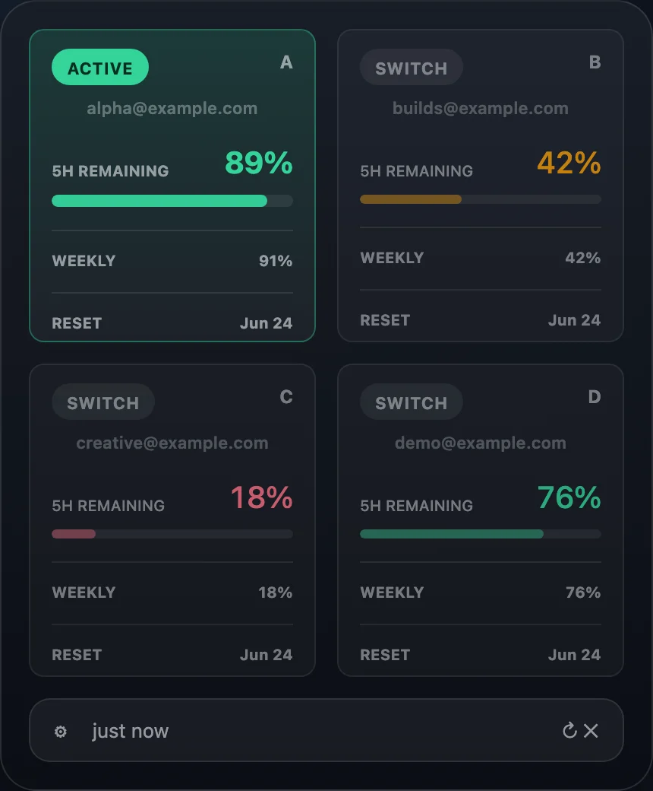
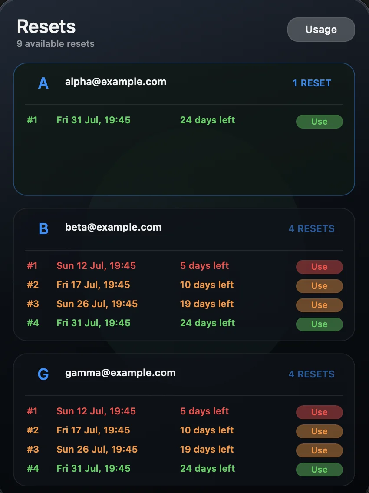
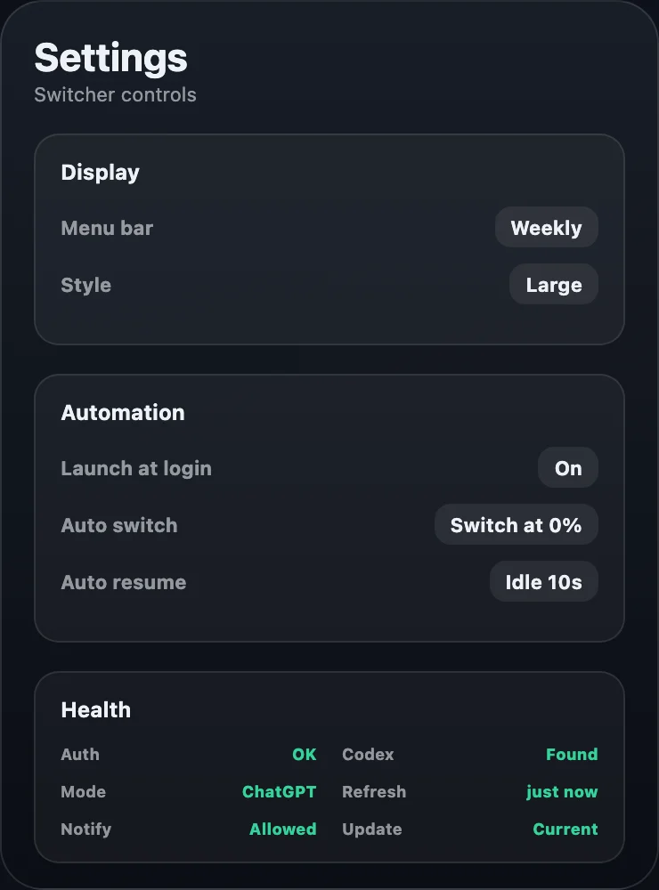

Colour and contrast keep the current account obvious.
Native macOS companion
Your Codex accounts, in one glance.
Switch safely, watch live limits, and keep work moving from a native macOS menu bar companion.

Native AppKitSmall, fast, and at home on macOS.
Local by designNo bundled accounts, tokens, or usage data.
Verified switchingChecks the target and rolls back on failure.
Know which account can keep going.
Live five-hour and weekly limits make the best next account clear before a switch interrupts your work.
See both usage windows without opening ChatGPT settings.
A compact grid keeps every saved account within reach.

Reset credits
Use every credit at the right moment.
See available reset credits across saved accounts, spot urgent expiry dates, and confirm before spending one.
- Grouped
- Credits stay organised by account.
- Time-aware
- Expiry urgency is easy to scan.
- Guarded
- Every redemption asks for confirmation.
Automatic when limits bite. Quiet when they do not.
Set a threshold, choose a better account, and optionally continue the active task after the verified switch.

Built for the awkward cases
Switching should fail predictably.
Account changes are verified, network work is bounded, and private diagnostics stay on your Mac.
Transactional switching
The requested account must become active. If it does not, the switcher restores the previous account.
Bounded background work
Command timeouts and capped concurrent refreshes prevent a stalled dependency from freezing the menu bar.
Privacy-safe diagnostics
Copy useful health details without publishing credentials, account IDs, or local usage snapshots.
Native lifecycle monitor
Event-driven monitoring follows ChatGPT without a constant polling loop.
Install it. Add accounts. Get back to work.
- DownloadGet v1.8.3 from GitHub Releases.
- OpenMove the app to Applications and approve the first launch.
- ConnectInstall codex-auth and add each account once.
Required account helper
npm install -g @loongphy/codex-auth
Good to know.
Does it store my credentials?
The public app contains no credentials. Saved Codex sessions remain in the local codex-auth account store.
Does it work with ChatGPT Desktop?
Yes. ChatGPT is the primary supported desktop app, with legacy Codex.app support retained.
Can it spend reset credits automatically?
No. Reset redemption always requires explicit confirmation and is verified after the request completes.
Is it notarized?
Not yet. Releases are ad-hoc signed, checksummed, and may require right-clicking Open on first launch.